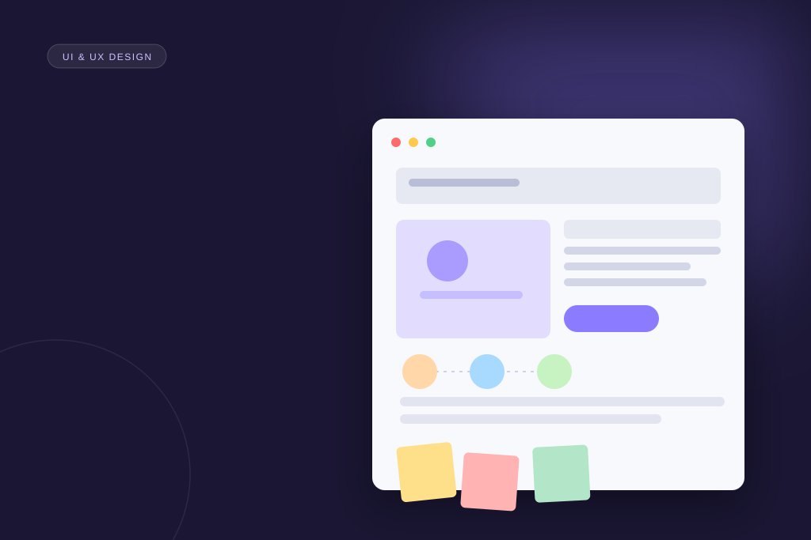

Detalhes do Serviço
Como Alice conduz o processo de UI & UX Design, da pesquisa à entrega junto ao time de engenharia.
Um processo pensado para reduzir risco
Cada projeto de UI & UX Design começa com entendimento real do problema, não com telas prontas. É esse cuidado que garante decisões de design sustentáveis a longo prazo.

Interfaces desenhadas com pesquisa, testadas com usuários reais
O trabalho de UI & UX Design de Alice combina entrevistas com stakeholders, pesquisa com usuários e prototipação para transformar requisitos de negócio em interfaces claras, consistentes e fáceis de usar. Cada decisão visual é justificada por um objetivo de produto ou uma necessidade real identificada durante a pesquisa.
- Wireframes e protótipos navegáveis em Figma, validados com usuários antes da implementação.
- Design systems documentados para manter consistência entre telas e squads.
- Handoff estruturado, com specs claras para o time de engenharia.
O processo é colaborativo: reuniões de alinhamento frequentes, documentação acessível e abertura para ajustes conforme o produto evolui. Essa proximidade evita retrabalho e mantém o time de negócio, design e engenharia na mesma página.
Alice já aplicou esse processo em produtos SaaS, plataformas financeiras e marketplaces, sempre priorizando decisões que equilibram experiência do usuário, viabilidade técnica e objetivos de negócio. O resultado são interfaces que não apenas parecem bem resolvidas, mas que sustentam o crescimento do produto ao longo do tempo — reduzindo fricção, aumentando a adoção de funcionalidades e facilitando a manutenção pelo time de engenharia no dia a dia.